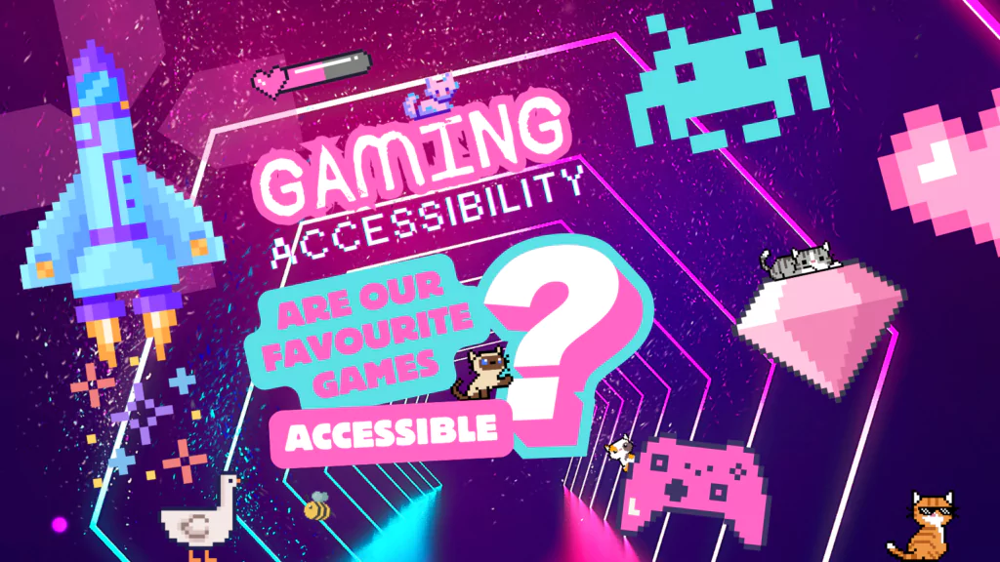

Accessibility at Pulse VR
Pulse VR aims to provide an inclusive and accessible experience for all users. This includes accessible website design and support for visitors who may be new to virtual reality or may have additional needs.

Accessible Virtual Reality Experiences
Virtual reality can be challenging for some users, especially those who are new to it. Pulse VR provides clear instructions, beginner-friendly games and staff support to ensure that all users feel comfortable before and during their session.
Website Accessibility
- Clear and simple navigation on all pages
- Readable text with good contrast
- Responsive design for mobile and tablet devices
- Large buttons for easy clicking and tapping
- Form validation to prevent mistakes
Support for New Users
- Beginner-friendly VR experiences available
- Clear instructions before starting a session
- Staff guidance for first-time users
- Shorter sessions available for comfort
- Simple booking process
Health and Comfort
- Breaks recommended between sessions
- Advice for motion discomfort
- Safe play environment
- Clear safety instructions
- Support available if needed
Getting Additional Support
If you require additional support, you can review the available information before booking. Pulse VR encourages users to choose games suitable to their experience level and comfort. Staff are available to assist during sessions where needed.
Book NowWhy Accessibility is Important
Accessibility ensures that all users, including beginners and those with different needs, can enjoy the Pulse VR experience. By providing clear navigation, readable content and supportive features, the website becomes easier to use and more inclusive.